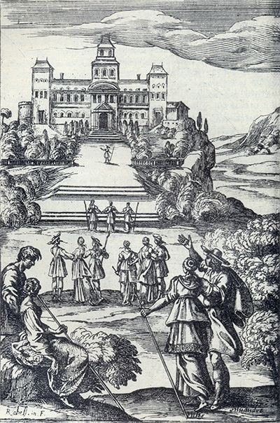
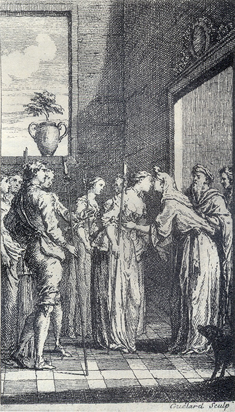

L'Astrée
d'Honoré d'Urfé
Troisième partie
Livre 2

Gravure signée Rabel
Au fond, la demeure d'Adamas. Hylas y parviendra le premier (III, 2, 44 verso),
suivi par Daphnide, Astrée et Diane (III, 2, 45 verso)
Au premier plan, les bergers se reposent (III, 2, 44 verso)
Phillis et Silvandre conversent (III, 2, 50 recto)
[Le jeune homme n'indique pas la façade dans le roman]
L'AstréeIII, 2. Édition Vaganay**, 1925Gravure signée Rabel
Au fond, la demeure d'Adamas. Hylas y parviendra le premier (III, 2, 44 verso),
suivi par Daphnide, Astrée et Diane (III, 2, 45 verso)
Au premier plan, les bergers se reposent (III, 2, 44 verso)
Phillis et Silvandre conversent (III, 2, 50 recto)
[Le jeune homme n'indique pas la façade dans le roman]
(Voir Illustrations)

Gravure signée Guélard
L'arrivée chez Adamas : Alexis embrasse Astrée (III, 2, 46 recto)
L'AstréeIII, 1. Édition Vaganay**, 1925Gravure signée Guélard
L'arrivée chez Adamas : Alexis embrasse Astrée (III, 2, 46 recto)
(Voir Illustrations)
Éd. de 1619, 25 verso.
Éd. Vaganay, III, p. 49.
Loin d'ici
η, loin, profanes.
Ô redoutable Déesse, fille de la grande Rhéa et du puissant Saturne, qui nourris et élevas Jupiter en ton giron lorsque sa mère le tenait caché
η ! Vesta que les Thyréniens appellent LABITH
HORCHIA
η, et qui es la première et la dernière engendrée de toi, reçois cette dévote
immolation que nous faisons pour le peuple et Sénat Romain, pour la conservation des Gaulois, et pour la grandeur et * prospérité
d'Amasis, notre Dame souveraine
η. Et nous fais la grâce que ton feu qui est en notre garde ne s'éteigne jamais, et que la requête qu'après la victoire obtenue sur les Titans tu fis au grand Jupiter d'être toujours Vierge ait aussi bien été obtenue pour nous que
pour toi, puisqu'étant toutes à toi, nous pouvons aussi avec raison être estimées une partie de toi-même.
touffe d'arbres, et un Berger à genoux devant elle, et peu après ils commencèrent d'ouïr leurs paroles un peu plus distinctement. Elles étaient telles :
J
E suis Amour, cet Enfant
Qui commande à toute chose,
Et qui de tous triomphant,
De tous à mon gré dispose.
" Une heure aimer, c'est longuement,
" C'est assez d'aimer un moment.
Et ne pensez que l'estime que vous dites faire
Fin du deuxième livre.

Livre 1

Livre 3
Référence électronique :
document.write('"'+document.title.substr(0, document.title.indexOf("-")-1)+'". '+"Dernière mise à jour : "+ExtractDate(document.lastModified)+".")Deux visages de L'Astrée.
©2005-2020 E. Henein.
URL :
var today = new Date();
document.write(document.URL +
"<br>Consulté le : " + today.toLocaleDateString("fr-FR") + ".");
var _gaq = _gaq || [];
_gaq.push(['_setAccount', 'UA-19288475-1']);
_gaq.push(['_trackPageview']);
(function() {
var ga = document.createElement('script'); ga.type = 'text/javascript'; ga.async = true;
ga.src = ('https:' == document.location.protocol ? 'https://ssl' : 'http://www') + '.google-analytics.com/ga.js';
var s = document.getElementsByTagName('script')[0]; s.parentNode.insertBefore(ga, s);
})();
Deux visages de L'Astrée.
©2005-2019 Eglal Henein. Creative Commons 4 
Édition critique de la première partie de L'Astrée (1607, 1621)
mise en ligne le 9 avril 2007
Édition critique de la deuxième partie de L'Astrée (1610, 1621)
mise en ligne le 10 octobre 2010
Édition critique de la troisième partie de L'Astrée (1619, 1621)
mise en ligne le 1er novembre 2014
Édition critique de la quatrième partie de L'Astrée (1624)
mise en ligne le 15 janvier 2019
document.write("Dernière mise à jour : "+ExtractDate(document.lastModified))